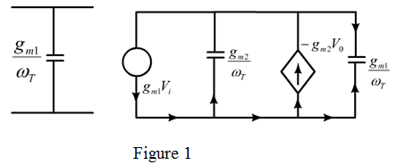

Step 1:
(a)
Refer to the Figure 9.70 (a) in the text book.
When gain is low, the component of in the input and output are almost equal to 
And it is much less than  .
.
That is,
When becomes significant and the component almost equal to zero.
Write the expression of unity gain frequency.
Therefore, the expression of unity gain frequency is.
Step 2:
(b)
Refer to the Figure 9.70 (b) in the text book.
Draw the following small signal equivalent circuit.

Step 3:
Write the following equations using Figure 1.
……. (1)
……. (2)
Substitute equation (2) in equation (1).
Step 4:
Further simplification yields,
Therefore, the expression of voltage gain is .
Step 5:
(c)
Determine the value of transconductance of second transistor.
Substitute for  , for
, for  ,
, for
for  and
and  for
for  .
.
Determine the value of transconductance of first transistor.
Substitute for  .
.
Step 6:
Determine the value of drain current of first transistor.
Substitute for , for ,
, for , for
for  and for
and for  .
.
Therefore, the value of drain current of first transistor is.
Step 7:
Determine the value of drain current of second transistor.
Therefore, the value of drain current of second transistor is.
Step 8:
Determine the value of 3dB frequency.
Substitute 12 GHz for and 3 V/V for .
Therefore, the value of 3-dB frequency is.